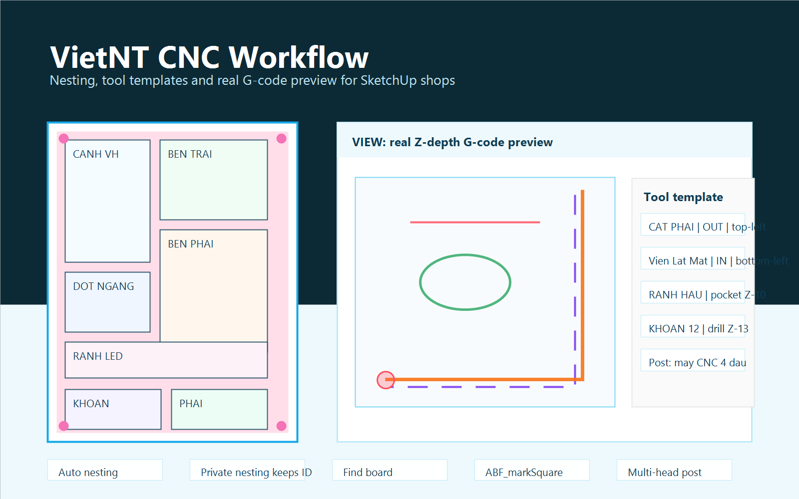

Đọc tấm trong SketchUp
Nhận diện panel, vật liệu, độ dày, ID, tên tấm và nhãn đang có trên model.

Plugin SketchUp cho xưởng nội thất CNC
Từ bản vẽ SketchUp đến sheet nesting và G-code: xếp tấm, netting riêng, giữ ID tấm, quản lý dao mẫu, mô phỏng đường chạy Z thực tế và xuất post cho máy CNC nhiều đầu.
Quy trình xưởng
VietNT tập trung vào các bước xưởng dùng hằng ngày: chọn tấm, xếp lại riêng từng tấm, kiểm tra dao mẫu, xem trước G-code và xuất file theo post máy.
Nhận diện panel, vật liệu, độ dày, ID, tên tấm và nhãn đang có trên model.
Xếp tấm theo vật liệu, hỗ trợ netting riêng và ưu tiên trả về vị trí cũ khi có thể.
Nhãn cập nhật theo tên/kích thước người dùng đã sửa, giữ số ID để tìm lại nhanh.
Mỗi layer đi theo một dao mẫu, độ sâu, đầu dao, tốc độ và thứ tự chạy riêng.
Mô phỏng đường chạy thực tế, Z thực, in/out/on, điểm xuống dao và sheet lật mặt trước khi xuất.
Tính năng hiện tại
Xếp toàn bộ sheet hoặc xếp lại riêng một vài tấm đã chỉnh sửa. Khi đổi màu, tấm đi về đúng sheet vật liệu mới.
Tên, kích thước, vật liệu và ID được đồng bộ sau khi chỉnh sửa, giúp tìm tấm không lệch tên cũ.
Cấu hình dao, layer, độ sâu, hướng cắt, in/out/on, điểm xuống dao và thứ tự chạy theo từng mẫu.
Tách nhóm đường dao theo layer như ABF_Groove, ABF_MONG, ABF_D4, ABF_D12, ABF_PROFILE và các layer PHAI.
Hỗ trợ sheet mặt dưới, đường ABF_markSquare, đường gốc cố định và đường dao đã bù để kiểm tra trước khi chạy.
Tối ưu thao tác chọn tấm trong nhiều sheet, phù hợp các file có số lượng panel lớn.
VIEW G-code
VIEW tách đường layer gốc và đường dao sau xử lý. Với ABF_markSquare, đường cố định được vẽ riêng, còn đường dao chạy theo in/out/on được vẽ thành lớp khác để thấy ngay dao đang lệch về phía nào.
Xuất máy
VietNT gom job theo sheet, theo mặt trên/mặt lật, theo dao mẫu và xuất file G-code theo post đang chọn. Các thông số đầu dao, RPM, feed, plunge và độ sâu được lấy từ bộ cấu hình hiện tại.
Cài đặt
File RBZ được lấy từ repository chính. Sau khi tải, cài trong SketchUp bằng Extension Manager rồi mở lại SketchUp để nạp plugin.
Version: Đang tải...
Ngày cập nhật: Đang tải...
Yêu cầu: Windows, SketchUp 2021+
Tải VietNT RBZ